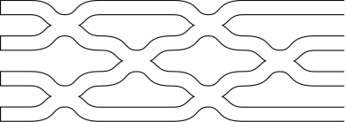

Clements
The quotonic.clements module includes a class that allows Mach-Zehnder interferometer (MZI) meshes AWAWA
arranged in the Clements configuration to be instantiated. For each instance, the user may specify
whether the mesh should exhibit ideal operation, or be subject to experimental imperfections including
photon propagation losses and/or imbalanced directional coupler splitting ratios. Once instantiated, the
user may supply a linear unitary transformation that is then decomposed into MZI phase shifts, or
alternatively provide MZI phase shifts to encode a linear unitary (non-unitary if imperfect) transformation.
Note that the code has been designed to produce accurate representations of \(2\times 2\) meshes (i.e. a
single MZI followed by 2 output phase shifts), however, the documentation corresponds to cases where \(m > 2\).
The code in this module has been inspired by the encoding proposed in W. R. Clements et al., "Optimal
design for universal multiport interferometers", Optica 3, 1460-1465 (2016),
and its python implementation in Bosonic: A Quantum Optics Library,
as originally designed for use in G. R. Steinbrecher et al., “Quantum optical neural networks”,
npj Quantum Inf 5, 60 (2019).
Mesh
¶
Model of a linear Mach-Zehnder interferometer mesh arranged in the Clements configuration.
Each mesh of Mach-Zehnder interferometers (MZIs) is classified by a number of optical modes \(m\). Also, fabrication imperfections can optionally be modelled by providing the mean and standard deviation of the propagation losses, \(\alpha_\mathrm{WG}\), in \(\text{dB}/\text{cm}\), the standard deviation on the splitting ratio of the nominally 50:50 directional couplers, and the lengths of components (MZI, phase shifters, flat sections in parallel with MZIs) in \(\text{cm}\). The default lengths correspond to the components considered in J. Ewaniuk et al., "Imperfect Quantum Photonic Neural Networks", Adv Quantum Technol. 2200125 (2023).
This class features methods to manipulate a mesh once it is constructed, including the generation of its
matrix representation (only unitary when \(\alpha_\mathrm{WG} = 0\text{ dB}/\text{cm}\)) from MZI and
output phase shifts, and the decomposition of a matrix representation to identify the MZI and output phase
shifts required to realize it. This decomposition follows the scheme of Clements et al. (cited above),
yet has been adjusted to work with the MZI transfer matrix associated with integrated photonic circuits
(see decode for more details).
Attributes:
| Name | Type | Description |
|---|---|---|
numModes |
int
|
Number of optical modes, \(m\) |
alphaWG |
Optional[float]
|
Mean propagation losses, \(\alpha_\mathrm{WG}\), in \(\text{dB}/\text{cm}\) |
std_alphaWG |
Optional[float]
|
Standard deviation of the propagation losses, \(\alpha_\mathrm{WG}\), in \(\text{dB}/\text{cm}\) |
std_SR |
Optional[float]
|
Standard deviation of the directional coupler splitting ratio, \(t\) |
ellMZI |
float
|
Characteristic length of a MZI, \(\ell_\mathrm{MZI}\), in \(\text{cm}\) |
ellPS |
float
|
Characteristic length of a phase shifter, \(\ell_\mathrm{PS}\), in \(\text{cm}\) |
ellF |
float
|
Characteristic length of a flat section in parallel with a MZI, \(\ell_\mathrm{F}\), in \(\text{cm}\) |
phases |
np.ndarray
|
A 1D array of length \(m^2\) including MZI and output phase shifts for the Clements mesh |
alpha |
np.ndarray
|
A 1D array of length \(m(m+1)\) including the fractions of light lost, \(\alpha\), for each component in the Clements mesh |
SR |
np.ndarray
|
A 1D array of length \(m(m-1)\) including the splitting ratios, \(t\), for each directional coupler in the Clements mesh |
Source code in quotonic/clements.py
23 24 25 26 27 28 29 30 31 32 33 34 35 36 37 38 39 40 41 42 43 44 45 46 47 48 49 50 51 52 53 54 55 56 57 58 59 60 61 62 63 64 65 66 67 68 69 70 71 72 73 74 75 76 77 78 79 80 81 82 83 84 85 86 87 88 89 90 91 92 93 94 95 96 97 98 99 100 101 102 103 104 105 106 107 108 109 110 111 112 113 114 115 116 117 118 119 120 121 122 123 124 125 126 127 128 129 130 131 132 133 134 135 136 137 138 139 140 141 142 143 144 145 146 147 148 149 150 151 152 153 154 155 156 157 158 159 160 161 162 163 164 165 166 167 168 169 170 171 172 173 174 175 176 177 178 179 180 181 182 183 184 185 186 187 188 189 190 191 192 193 194 195 196 197 198 199 200 201 202 203 204 205 206 207 208 209 210 211 212 213 214 215 216 217 218 219 220 221 222 223 224 225 226 227 228 229 230 231 232 233 234 235 236 237 238 239 240 241 242 243 244 245 246 247 248 249 250 251 252 253 254 255 256 257 258 259 260 261 262 263 264 265 266 267 268 269 270 271 272 273 274 275 276 277 278 279 280 281 282 283 284 285 286 287 288 289 290 291 292 293 294 295 296 297 298 299 300 301 302 303 304 305 306 307 308 309 310 311 312 313 314 315 316 317 318 319 320 321 322 323 324 325 326 327 328 329 330 331 332 333 334 335 336 337 338 339 340 341 342 343 344 345 346 347 348 349 350 351 352 353 354 355 356 357 358 359 360 361 362 363 364 365 366 367 368 369 370 371 372 373 374 375 376 377 378 379 380 381 382 383 384 385 386 387 388 389 390 391 392 393 394 395 396 397 398 399 400 401 402 403 404 405 406 407 408 409 410 411 412 413 414 415 416 417 418 419 420 421 422 423 424 425 426 427 428 429 430 431 432 433 434 435 436 437 438 439 440 441 442 443 444 445 446 447 448 449 450 451 452 453 454 455 456 457 458 459 460 461 462 463 464 465 466 467 468 469 470 471 472 473 474 475 476 477 478 479 480 481 482 483 484 485 486 487 488 489 490 491 492 493 494 495 496 497 498 499 500 501 502 503 504 505 506 507 508 509 510 511 512 513 514 515 516 517 518 519 520 521 522 523 524 525 526 527 528 529 530 531 532 533 534 535 536 537 538 539 540 541 542 543 544 545 546 547 548 549 550 551 552 553 554 555 556 557 558 559 560 561 562 563 564 565 566 567 568 569 570 571 572 573 574 575 576 577 578 579 580 581 582 583 584 585 586 587 588 589 590 591 592 593 594 595 596 597 598 599 600 601 602 603 604 605 606 607 608 609 610 611 612 613 614 | |
__init__(numModes, alphaWG=None, std_alphaWG=None, std_SR=None, ellMZI=0.028668, ellPS=0.005, ellF=0.028668)
¶
Initialization of a MZI mesh arranged in the Clements configuration.
The properties of the mesh are first saved, and its phase shifts are initialized as zeroes. If losses are provided, then component-by-component loss probabilities are computed and stored either by selecting them randomly from a normal distribution (if a standard deviation is provided), or by computing the uniform losses for each component. In either case, the mean fraction of light lost, \(\alpha\), is given by,
for a given component of charactersitic length \(\ell\) and photon propagation losses in \(\text{dB}/\text{cm}\) of \(\alpha_\mathrm{WG}\), The loss probabilities are concatenated into a single 1D array ordered as follows: loss in each optical mode for MZI column 1, loss in each optical mode for MZI column 2, ..., loss in each optical mode for output phase shift column. If a standard deviation on the directional coupler splitting ratios is provided, then specific splitting ratios are selected randomly from a normal distribution for each directional coupler in the mesh. Similarly, these are concatenated into a single 1D array ordered as follows: ratios for the two directional couplers in the top MZI of column 1, ..., ratios for the two directional couplers in the bottom MZI of column 1, ratios for the two directional couplers in the top MZI of column 2, ..., ratios for the two directional couplers in the bottom MZI of column 2, etc.
Parameters:
| Name | Type | Description | Default |
|---|---|---|---|
numModes |
int
|
Number of optical modes, \(m\) |
required |
alphaWG |
Optional[float]
|
Mean propagation losses, \(\alpha_\mathrm{WG}\), in \(\text{dB}/\text{cm}\) |
None
|
std_alphaWG |
Optional[float]
|
Standard deviation of the propagation losses, \(\alpha_\mathrm{WG}\), in \(\text{dB}/\text{cm}\) |
None
|
std_SR |
Optional[float]
|
Standard deviation of the directional coupler splitting ratio, \(t\) |
None
|
ellMZI |
float
|
Characteristic length of a MZI, \(\ell_\mathrm{MZI}\), in \(\text{cm}\) |
0.028668
|
ellPS |
float
|
Characteristic length of a phase shifter, \(\ell_\mathrm{PS}\), in \(\text{cm}\) |
0.005
|
ellF |
float
|
Characteristic length of a flat section in parallel with a MZI, \(\ell_\mathrm{F}\), in \(\text{cm}\) |
0.028668
|
Source code in quotonic/clements.py
54 55 56 57 58 59 60 61 62 63 64 65 66 67 68 69 70 71 72 73 74 75 76 77 78 79 80 81 82 83 84 85 86 87 88 89 90 91 92 93 94 95 96 97 98 99 100 101 102 103 104 105 106 107 108 109 110 111 112 113 114 115 116 117 118 119 120 121 122 123 124 125 126 127 128 129 130 131 132 133 134 135 136 137 138 139 140 141 142 143 144 145 146 147 148 149 150 151 152 153 154 155 156 157 158 159 160 161 162 163 164 165 166 167 168 169 170 171 172 | |
decode(U)
¶
Perform Clements decomposition on a square \(m\times m\) unitary matrix.
Given some linear \(m\times m\) unitary transformation, where \(m\) is the number
of optical modes, this method performs Clements decomposition to determine the
phase shifts (\(\phi, \theta\)) for each MZI such that the mesh performs this
transformation. Once determined, the phases are saved to the phases attribute.
For more details on the decomposition procedure, see W. R. Clements et al.,
"Optimal design for universal multiport interferometers", Optica 3,
1460-1465 (2016). This method is
adapted from the Interferometer
repository.
The main difference between this implementation and the original by Clements et al. is the form of the MZI transfer matrix assumed. In the ideal case, a MZI is described by,
Clements et al. chose to perform a transformation, \(\theta\to\frac{\pi}{2}-\theta\), \(\phi\to\phi+\pi\), to achieve the form,
Here, this transformation is undone by applying the inverse transformation,
\(\theta\to\frac{\pi}{2}-\theta\), \(\phi\to\phi+\pi\), at each stage of
the decomposition procedure. This function concludes by arranging the phase
shifts as required for the encoding scheme specified in encode.
Parameters:
| Name | Type | Description | Default |
|---|---|---|---|
U |
np.ndarray
|
A 2D \(m\times m\) array to perform Clements decomposition on |
required |
Source code in quotonic/clements.py
481 482 483 484 485 486 487 488 489 490 491 492 493 494 495 496 497 498 499 500 501 502 503 504 505 506 507 508 509 510 511 512 513 514 515 516 517 518 519 520 521 522 523 524 525 526 527 528 529 530 531 532 533 534 535 536 537 538 539 540 541 542 543 544 545 546 547 548 549 550 551 552 553 554 555 556 557 558 559 560 561 562 563 564 565 566 567 568 569 570 571 572 573 574 575 576 577 578 579 580 581 582 583 584 585 586 587 588 589 590 591 592 593 594 595 596 597 598 599 600 601 602 603 604 605 606 607 608 609 610 611 612 613 614 | |
encode()
¶
Encode a MZI mesh in the Clements configuration from an array of phase shifts.
Using Clements encoding, any \(m\times m\) unitary matrix can be generated by multiplying a set of block diagonal unitary transformations \(\mathbf{T}_{p,q}(\phi,\theta)\) with the \(m\times m\) identity matrix in a specific order. Each transformation, \(\mathbf{T}_{p,q}\), features a \(2\times 2\) block that acts only on adjacent modes \(p,q : p = q-1\). This \(2\times 2\) block is computed according to the diagram displayed below where \(\phi\) and \(2\theta\) are phase shifters, applied to mode \(p\) only, and the intersections are 50:50 directional couplers (ideally, otherwise with splitting ratio \(t\)).

Transformations, \(\mathbf{T}_{p,q}\), are applied in each iteration of the loop. When
the loop counter is even, placementSpecifier = 0 such that the transformations for
the first two optical modes and each consecutive adjacent pair are generated. For
example, if \(m = 5\), then the initial iteration will generate and apply \(\mathbf{T}_{1,2}\),
\(\mathbf{T}_{3,4}\), while the second iteration (placementSpecifier = 1) produces
\(\mathbf{T}_{2,3}\), \(\mathbf{T}_{4,5}\). Since the phases are input in a 1D array,
it must be accessed specifically when generating the transformations. Each phase shift
column (\(\phi\) or \(2\theta\)) requires as many phase parameters as there are
transformations to generate in a given loop iteration. Thus, the input array is
accessed according to the phase shifts per column (pspc) calculation which depends
on \(m\) and the placementSpecifier for the particular iteration. The matrix
multiplications take place according to the order (left to right) in the figure above,
Therefore, as an example, if a given iteration constructs two transformations,
\(\mathbf{T}_{1,2}\) and \(\mathbf{T}_{3,4}\), the phase shifts must be ordered as
\(\phi_{1,2}\), \(\phi_{3,4}\), \(2\theta_{1,2}\), \(2\theta_{3,4}\).
By applying all transformations in the specified order, followed by a column of output phase shifters on each mode, a rectangular mesh that represents the full \(m \times m\) single-photon unitary matrix is generated. This is displayed below, where each cross is a MZI.

Mathematically, this procedure takes the form,
where \(R\) is the sequence of the \(\frac{1}{2}m(m-1)\) two-mode transformations, and \(\phi\), \(\theta\) are elements of the corresponding vectors \(\boldsymbol{\phi}\), \(\boldsymbol{\theta}\) that are selected according to the sequence, and \(\mathbf{D}\) is a diagonal \(m\times m\) matrix that is representative of the column of output phase shifters.
It is termed a "single-photon" unitary as it is a representation only in the Fock basis of \(m\) modes when \(n = 1\). To obtain the "multi-photon" unitary, a transformation must be applied (see AA).
Returns:
| Type | Description |
|---|---|
np.ndarray
|
An \(m\times m\) 2D array representative of the linear unitary transformation, \(\mathbf{U}(\boldsymbol{\phi}, \boldsymbol{\theta})\), enacted by the Clements mesh |
Source code in quotonic/clements.py
361 362 363 364 365 366 367 368 369 370 371 372 373 374 375 376 377 378 379 380 381 382 383 384 385 386 387 388 389 390 391 392 393 394 395 396 397 398 399 400 401 402 403 404 405 406 407 408 409 410 411 412 413 414 415 416 417 418 419 420 421 422 423 424 425 426 427 428 429 430 431 432 433 434 435 436 437 438 439 440 441 442 443 444 445 446 447 448 449 450 451 452 453 454 455 456 457 458 459 460 461 462 463 464 465 466 467 468 469 470 471 472 473 474 475 476 477 478 479 | |
mzi(phi, twotheta, SR1=0.5, SR2=0.5, alpha_up=0, alpha_low=0, inv=False)
¶
Construct \(2\times 2\) MZI transfer matrix.
Each MZI, as displayed below, consists of two phase shifters enacting respective phase shifts \(\phi\), \(\theta\), and two directional couplers with respective splitting ratios \(t_1\), \(t_2\) (ideally, \(t_1 = t_2 = 0.5\)).
The phase shifter transfer matrices are given by,
for phase shifts \(\phi\) and \(2\theta\) respectively. The directional coupler transfer matrix is given by,
which simplifies to,
in the ideal case of \(t = 0.5\) (i.e. 50:50). Each MZI may contribute an imbalanced probability of photon loss in each of its arms. This is modelled by multiplying a loss matrix,
where \(\alpha_\text{up}\), \(\alpha_\text{low}\) are the fractions of light lost in the upper and lower arms of the MZI, respectively. Altogether, the MZI transfer matrix is given by,
which simplifies to,
in the ideal case of \(t_1 = t_2 = 0.5\), \(\alpha_1 = \alpha_2 = 0\). This
function constructs the MZI transfer matrix from its parameters, and
optionally returns its inverse, \(\mathbf{T}_\text{MZI}^{-1}\), if
inv = True is set.
Parameters:
| Name | Type | Description | Default |
|---|---|---|---|
phi |
float
|
Phase shift \(\phi\) |
required |
twotheta |
float
|
Phase shift \(2\theta\) |
required |
SR1 |
float
|
Splitting ratio of the first directional coupler in the MZI, \(t_1\) |
0.5
|
SR2 |
float
|
Splitting ratio of the second directional coupler in the MZI, \(t_2\) |
0.5
|
alpha_up |
float
|
Fraction of light lost in the upper arm of the MZI, \(\alpha_\text{up}\) |
0
|
alpha_low |
float
|
Fraction of light lost in the lower arm of the MZI, \(\alpha_\text{low}\) |
0
|
inv |
bool
|
Boolean that controls whether the MZI matrix or its inverse is returned |
False
|
Returns:
| Type | Description |
|---|---|
np.ndarray
|
A \(2\times 2\) 2D array that represents the MZI transfer matrix |
Source code in quotonic/clements.py
219 220 221 222 223 224 225 226 227 228 229 230 231 232 233 234 235 236 237 238 239 240 241 242 243 244 245 246 247 248 249 250 251 252 253 254 255 256 257 258 259 260 261 262 263 264 265 266 267 268 269 270 271 272 273 274 275 276 277 278 279 280 281 282 283 284 285 286 287 288 289 290 291 292 293 294 295 296 297 298 299 300 301 302 303 304 305 306 307 308 309 310 | |
mzi_column(placementSpecifier, phis, twothetas, SRs, alphas)
¶
Construct MZI transfer matrix for a column of the Clements mesh.
The Clements mesh (see encode for an example diagram) can be separated into
columns of MZIs. Each MZI in a given column contributes a transformation,
\(\mathbf{T}_{p,q}\), that is both block diagonal and \(m\times m\). Starting
from the \(m\times m\) identity matrix, a \(2\times 2\) MZI transfer matrix is
inserted into the block from element \((p,p)\) to element \((q,q)\). All the
separate transformations in a given column commute which each other since they
act on separate blocks. Thus, this function constructs all of the
\(\mathbf{T}_{p,q}\) transformations in a given column as a single \(m\times m\)
matrix that is returned.
The location of the first MZI transfer matrix insertion is controlled by
placementSpecifier, then a \(2\times 2\) \(\mathbf{T}_\text{MZI}\) can be
inserted at each separated block along the diagonal. For example, consider
\(m = 5\), placementSpecifier = 0, and the ideal case with no imperfections.
The output matrix will then incorporate the MZIs acting on the pair of modes
\((0,1)\) and \((2,3)\). As the function proceeds, the matrix changes as,
Parameters:
| Name | Type | Description | Default |
|---|---|---|---|
placementSpecifier |
int
|
A placeholder that instructs the function where to begin inserting MZI transfer matrices |
required |
phis |
np.ndarray
|
A 1D array of length |
required |
twothetas |
np.ndarray
|
A 1D array of length |
required |
SRs |
np.ndarray
|
A 1D array of length |
required |
alphas |
np.ndarray
|
A 1D array of length |
required |
Returns:
| Type | Description |
|---|---|
np.ndarray
|
An \(m\times m\) 2D array that represents the transformation yielded by a column of MZIs |
Source code in quotonic/clements.py
312 313 314 315 316 317 318 319 320 321 322 323 324 325 326 327 328 329 330 331 332 333 334 335 336 337 338 339 340 341 342 343 344 345 346 347 348 349 350 351 352 353 354 355 356 357 358 359 | |
set_SR(SR)
¶
Set all splitting ratios in the directional couplers of the Clements mesh.
Each MZI in a Clements mesh features two directional couplers, each nominally with
a 50:50 splitting ratio, however, this may vary in imperfect cases. Here, the
splitting ratios, \(t\), for the \(m(m-1)\) directional couplers can be manually
specified in the order at which they appear during the encoding scheme. See __init__
and encode for more details.
Parameters:
| Name | Type | Description | Default |
|---|---|---|---|
SR |
np.ndarray
|
A 1D array of length \(m(m-1)\) including the splitting ratios, \(t\), for each directional coupler in the Clements mesh |
required |
Source code in quotonic/clements.py
204 205 206 207 208 209 210 211 212 213 214 215 216 217 | |
set_alpha(alpha)
¶
Set all component losses in the Clements mesh.
A Clements mesh with \(m\) optical modes features \(\frac{1}{2}m(m-1)\) MZIs, \(m\) flat
sections in parallel with MZIs, and \(m\) output phase shifters, each contributing a
specific fraction of light lost when photons propagate through them. The MZIs may
have imbalanced losses in each arm, and thus there are two values for the fraction
of light lost per MZI. Here, all of the fractions can be specified manually, in the
order in which each component appears during the encoding scheme. See __init__ and
encode for more details.
Parameters:
| Name | Type | Description | Default |
|---|---|---|---|
alpha |
np.ndarray
|
A 1D array of length \(m(m+1)\) including the fractions of light lost, \(\alpha\), for each component in the Clements mesh |
required |
Source code in quotonic/clements.py
187 188 189 190 191 192 193 194 195 196 197 198 199 200 201 202 | |
set_phases(phases)
¶
Set all phase shifts in the Clements mesh.
A Clements mesh with \(m\) optical modes features \(m^2\) phase shifts. The phase shifts
input here must be ordered in accordance with the encoding scheme. See encode for
more details.
Parameters:
| Name | Type | Description | Default |
|---|---|---|---|
phases |
np.ndarray
|
A 1D array of length \(m^2\) including MZI and output phase shifts for the Clements mesh |
required |
Source code in quotonic/clements.py
174 175 176 177 178 179 180 181 182 183 184 185 | |